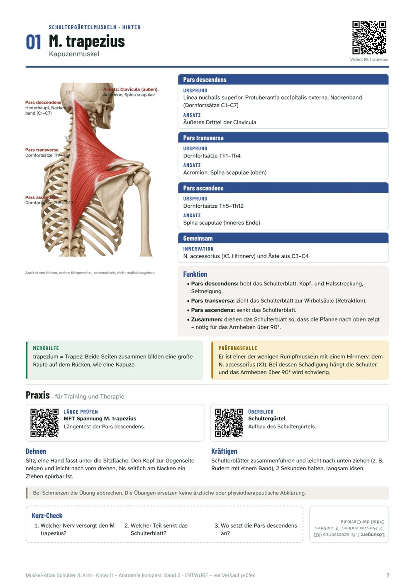
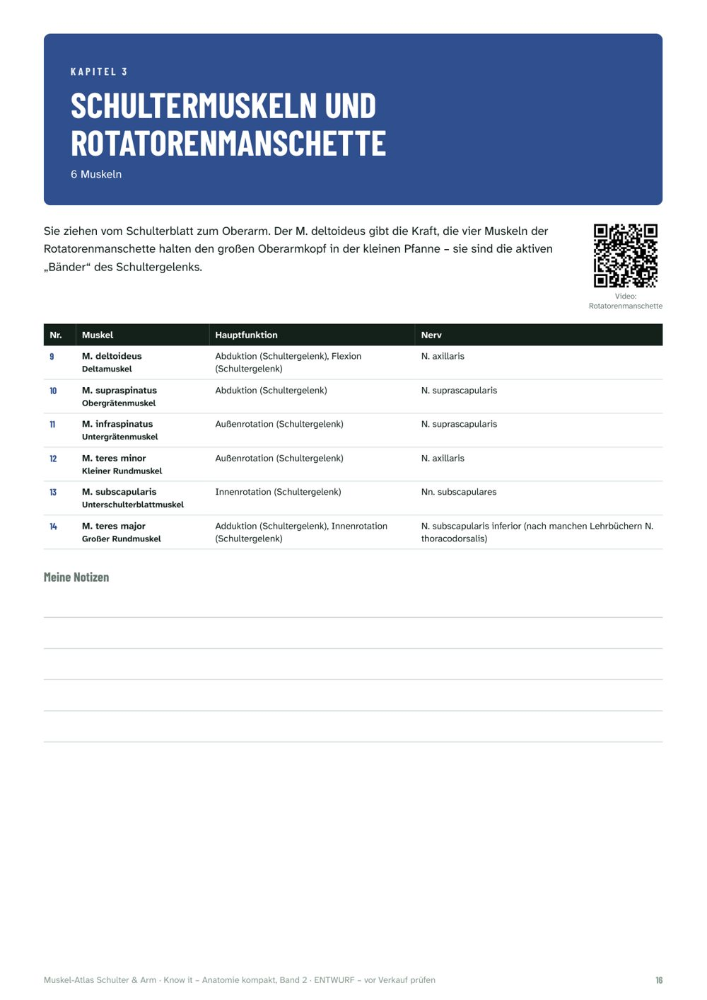
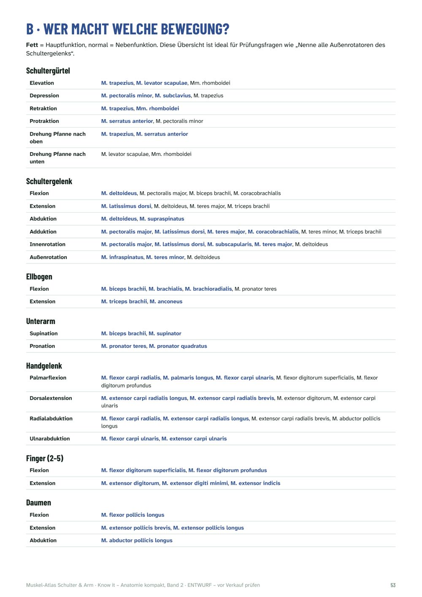

Band 1
Muskel-Atlas Hüfte & Bein
Alle 32 Muskeln von Hüfte, Oberschenkel und Unterschenkel mit Ursprung, Ansatz, Innervation und Funktion – mit farbigen Illustrationen, Merkhilfen …
19,90 €Leseprobe

Band 2 · Know it – Anatomie kompakt
Alle 38 Muskeln von Schultergürtel, Schulter, Oberarm und Unterarm mit Ursprung, Ansatz, Innervation und Funktion – mit farbigen Illustrationen, Merkhilfen, Prüfungsfallen, Praxis-Videos und 114 Fragen zum Selbsttest.
56 Seiten A4 · für Handy, Tablet und zum Ausdrucken · persönliche Lizenz · sichere Zahlung über Digistore24
Für Studierende der Sportwissenschaft, Physiotherapie und Medizin, für Trainer:innen-Ausbildungen und für alle, die vor einer Anatomie-Prüfung stehen. Du bekommst das Prüfungswissen kompakt auf einer Seite pro Muskel – und siehst gleich, wie du es in Training und Therapie anwendest.




In der kostenlosen Leseprobe findest du die Einleitung, den M. trapezius, den M. deltoideus und den M. supraspinatus – komplett.
Leseprobe herunterladenUrsprung, Ansatz, Innervation und Funktion stehen frei zugänglich im Muskel-Lexikon. Im Buch kommen Merkhilfe, Prüfungsfalle, Funktionstest, Übungen und Kurz-Check dazu.
Alle 32 Muskeln von Hüfte, Oberschenkel und Unterschenkel mit Ursprung, Ansatz, Innervation und Funktion – mit farbigen Illustrationen, Merkhilfen …
Alle 42 Muskeln von Bauch, Rücken, Atmung, Nacken, Hals und Beckenboden mit Ursprung, Ansatz, Innervation und Funktion – mit farbigen Illustrationen …
Bau, Bänder, Stabilität und typische Verletzungen aller großen Gelenke – von Schulter und Hand über Wirbelsäule und Becken bis Knie und Fuß. 14 …
Knochen und Skelett, Muskelkontraktion und Fasertypen, Herz, Kreislauf, Blut, Atmung, Verdauung, Niere, Wasser- und Wärmehaushalt – 20 Doppelseiten …
Anpassung und Trainingsprinzipien, Belastungsnormative, Kraft, Ausdauer, Schnelligkeit, Beweglichkeit, Koordination, Regeneration und …
Energie und Nährstoffe, Verdauung, Vitamine und Mineralstoffe, Wasser, Körperzusammensetzung, Ernährungsformen und Sporternährung – 20 Doppelseiten …